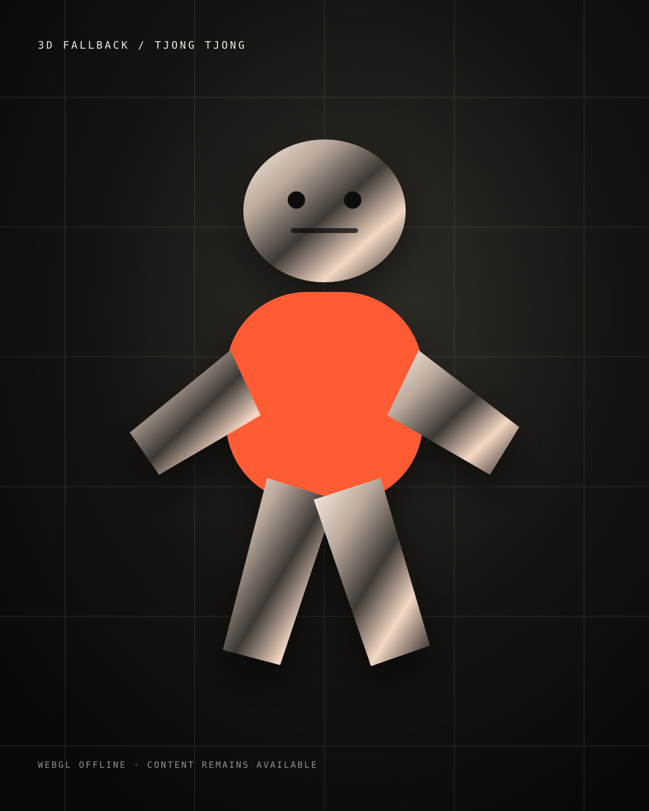

BEST-WORK FORMAT / CHARACTER MOTION
SKULL CHARACTER.
A moving character takes the landing page from portfolio to performance. This CC0 model demonstrates the final experience until Tjong Tjong's own skull asset is supplied.
3D DESIGN / MOTION / CGI
TJONG TJONG / INDEPENDENT 3D DESIGNER
I build expressive characters, objects and tactile digital worlds — from first form to final motion.
LOADING LIVE 3D…
BEST-WORK FORMAT / CHARACTER MOTION
A moving character takes the landing page from portfolio to performance. This CC0 model demonstrates the final experience until Tjong Tjong's own skull asset is supplied.
HOW IT WAS MADE / SCROLL TO DECONSTRUCT
Start with silhouette, topology and readable proportions. Strip away the finish and make the form work.
Refine the volumes as a neutral sculpt. No shiny material to hide behind — only shape and character.
Bring in surface language, contrast and texture. The character starts to feel tactile instead of digital.
Animation, camera and cinematic lighting turn the asset into the final moving image visitors remember.
SELECTED / SHOWROOM
Four featured directions on Home. The complete portfolio and filters live on the Work page.
INTERACTIVE / MOTION LAB
A second live 3D study keeps the site moving while showing how animation controls can become part of the portfolio experience.

Drag to rotate · explore motion
RobotExpressive · CC0 1.0
PROFILE / APPROACH
Tjong Tjong explores form, movement, material and character through 3D. The goal: make images that feel authored, tactile and hard to ignore.
01Form before decoration.
02Motion with personality.
03Material that rewards a closer look.
04Final output built for the screen it lives on.
CAPABILITIES / COMMISSIONS
Visual language, references, form and scene direction.
Objects, materials, lighting and image-led campaigns.
Expressive movement, loops and animated visual systems.
Material studies, lighting tests and style exploration.
WORKFLOW / 04 MOVES
Define the feeling, references and output.
Block the object, character or world.
Give it surface, light and behaviour.
Render, edit and adapt for delivery.
SELECTED COMMISSIONS / OPEN
Verified direct contact details were not supplied for this release. Add Tjong Tjong’s confirmed email or social link here before outreach.